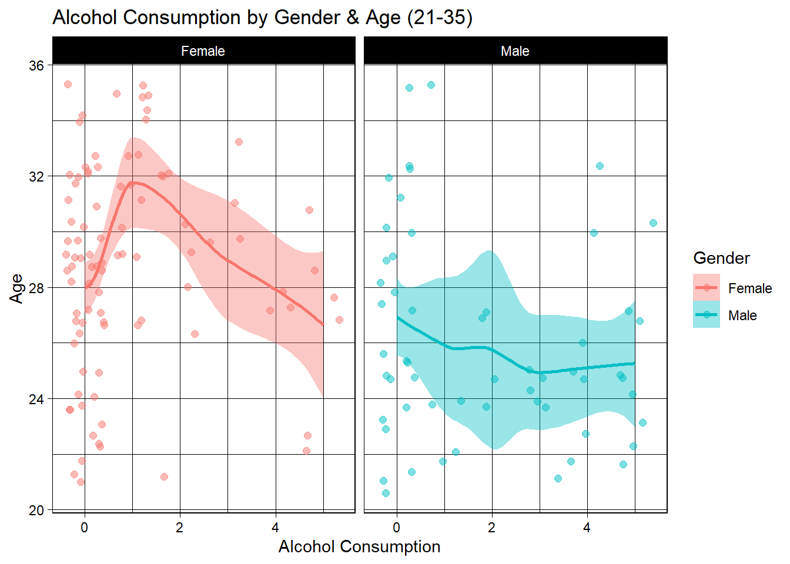
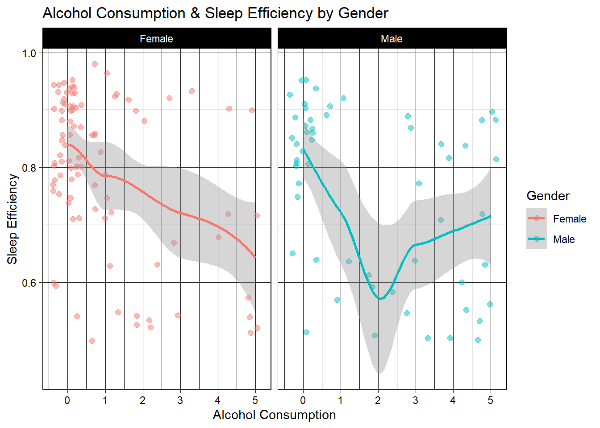
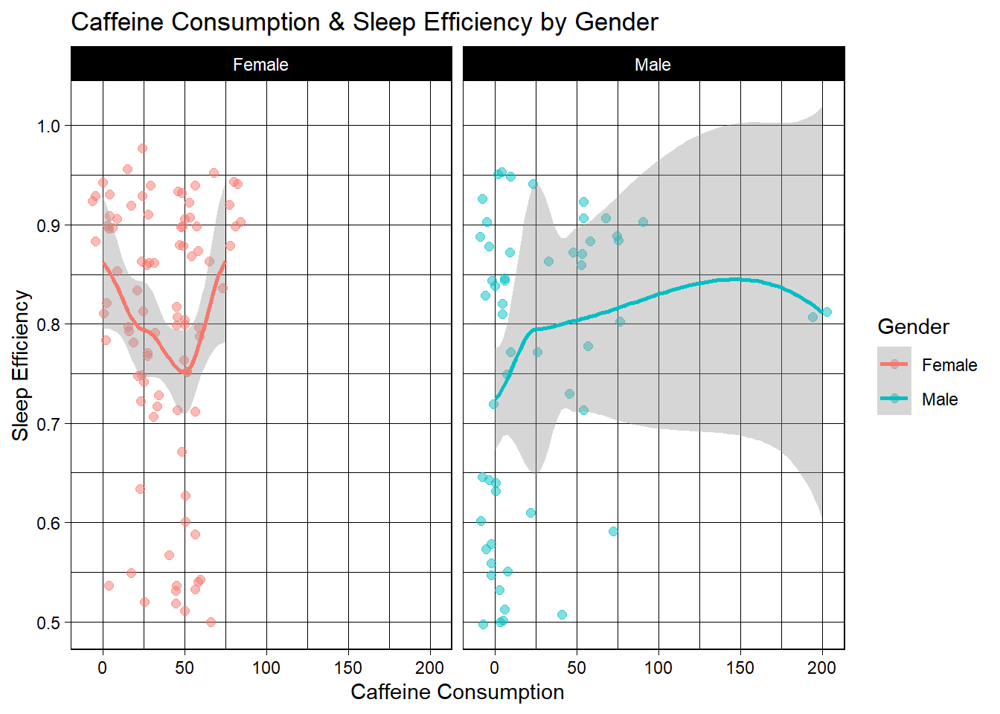
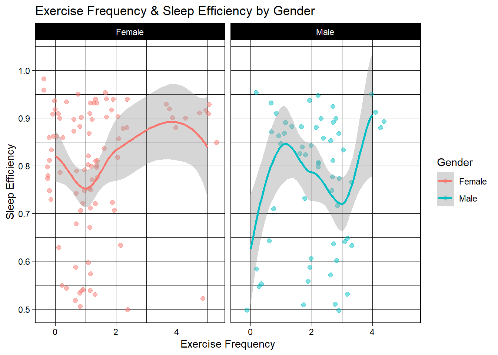
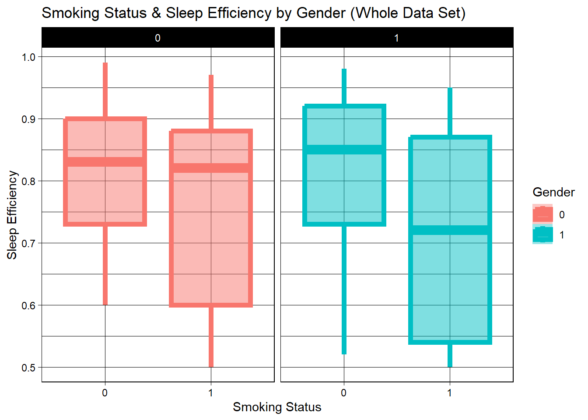
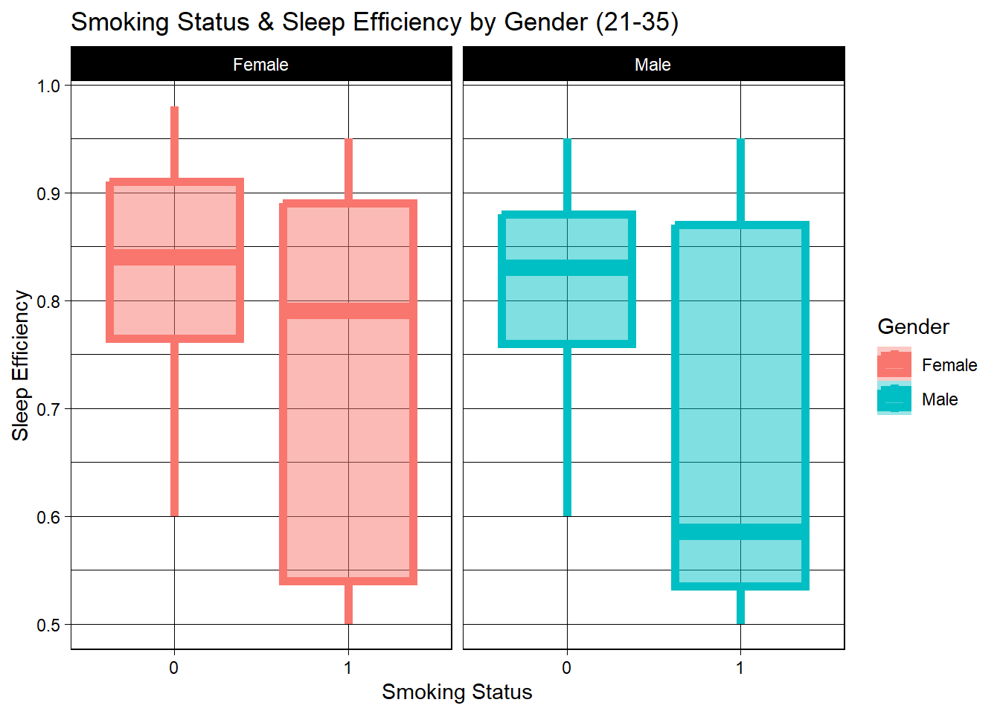

#load in relevant packages
library(tidyverse)
library(ggplot2)
library(ggthemes)
library(summarytools)
library(kableExtra)
library(dplyr)
library(reshape2)
library(SmartEDA)
knitr::opts_chunk$set(echo = TRUE, warning=FALSE, message=FALSE)Final Project: Connor Landreth
Final_Project_Submission
Sleep_Efficiency
Connor Landreth
Determinants of Sleep Efficiency
Introduction
Today, there are a slew of sleep inhibitors that are hindering young individuals from obtaining adequate and or efficient sleep. Today, there is overwhelmingly easy access to alcohol, caffeine, and nicotine, and they have all evolved in their own ways to become very socially accepted. We will look at which of these negative variables, as well as a more positive variable (exercise), affect sleeping trends in young individuals, aged 21-35. The data set, which I will discuss in greater detail below, analyzes sleep efficiency and time spent sleeping. It also notes whether or not/how much alcohol and caffeine was consumed the prior day. Additionally, it looks at frequency of exercise, and whether or not the individual smokes. All this combined will enable us to draw insights on what some drivers of poor or strong sleep efficiency are. Doing so may curate actionable results for individuals looking to improve sleep efficiency and duration by taking into account the findings here. As someone who has slept poorly essentially forever, I am very interested to see what trends emerge.
Data Set Introduction & Background
The data set contains information about a group of test subjects and their sleep patterns. Each test subject is identified by a unique “Subject ID” and their age and gender are also recorded. The “Bedtime” and “Wake-up time” features indicate when each subject goes to bed and wakes up each day, and the “Sleep duration” feature records the total amount of time each subject slept in hours. The “Sleep efficiency” feature is a measure of the proportion of time spent in bed that is actually spent asleep. The “REM sleep percentage”, “Deep sleep percentage”, and “Light sleep percentage” features indicate the amount of time each subject spent in each stage of sleep. The “Awakenings” feature records the number of times each subject wakes up during the night. Additionally, the data set includes information about each subject’s caffeine and alcohol consumption in the 24 hours prior to bedtime, their smoking status, and their exercise frequency. This will all be outlined in a descriptive table down below, with the addition of measurement scale.
The data set provided was collected as part of a study conducted in the UK by a research team from The University of Oxfordshire1. The study aimed to investigate the impact of lifestyle factors such as caffeine, alcohol, and exercise on sleep patterns and sleep quality. The research team recruited participants from the local community and collected data over a period of several months. The data was collected using a combination of self-reported surveys, actigraphy, and polysomnography which is a sleep monitoring technique. The data was then analyzed to understand the relationship between lifestyle factors and sleep patterns and to identify any potential areas for intervention to improve sleep.
I am interested in finding sleep inhibitors for young adults, so I’ll filter for ages from 21-35. I would like to look at those under 35 more generally, but I cannot go below 21 because nicotineand alcohol are not legally available for individuals under the age of 21. The results, therefor, could be erroneous without filtering out below 21. Also note, 35 was an abstract selection and where I chose the cut-off for “young adults”, although this is not an objectively true measure of “young”, of course.
Data Description
I am loading in the raw data, which is rather tidy to begin with. I will be altering the data to fit my specific analysis, but spending a bit more time analyzing and less cleaning. Any NAs will be dropped and disregarded, because there is a very slim percentage of NAs present in the dataset, so the results will not be impacted from disregarding them.
getwd()[1] "C:/Github Projects/601_Spring_2023/posts"#Set wd to folder with data
setwd("C:/Github Projects/601_Spring_2023/posts/ConnorLandreth_FinalProjectData")
#read in raw sleep data
sleep <- read.csv("Sleep_Efficiency.csv")
#View(sleep)
#head(sleep)
#View Dimensions of dataframe
dim(sleep)[1] 452 15Dimensions on the raw sleep data include 452 observations over 15 variables
#evaluate unique values and summarize to evaluate number of respondents, age range, and gender options
length(unique(sleep$ID))[1] 452length(unique(sleep$Age))[1] 61length(unique(sleep$Gender))[1] 2#I am going to remove bedtime and wakeup time, as the information is irrelevant for this analysis and is encapsulated in the sleep duration column. Then I will recode variables to make them numeric to summarize.
# delete columns 4 & 5
sleep <- sleep[, -c(4:5)]
#Make gender and smoking status binary to get breakdown in summary stats
sleep$Gender[sleep$Gender=="Male"] <- "0"
sleep$Gender[sleep$Gender=="Female"] <- "1"
sleep$Smoking.status[sleep$Smoking.status=="No"] <- "0"
sleep$Smoking.status[sleep$Smoking.status=="Yes"] <- "1"
#use summarytools to view summary of each variable (More aesthetically pleasing/organized than base R)
summarytools::dfSummary(sleep)There are 452 unique IDs, so each row is an individual. Ages 9-69 are included across the 452 subjects, and 2 genders. There are four more men than women, but very close to an even split.
Some important notes to summarize variables, the mean age here is just over 40, so we will filter to look solely at young adults later. Mean sleep duration is about 7.5 hours.
Below, I will present the relevant variables in a more consumable format using kable that will break down these variables by meaning and measurement . I’ll do this by creating a data frame.
data.frame(data.frame, stringsAsFactors = TRUE)Error in xj[i]: object of type 'closure' is not subsettable# Create variables
Variables <- c('Age', 'Gender', 'Sleep Duration', 'Sleep Efficiency', 'REM Sleep percentage', 'Deep Sleep Percentage', 'Light Sleep Percentage', 'Awakenings', 'Caffeine Consumption', 'Alcohol Consumption', 'Smoking Status', 'Exercise Frequency')
# Add meaning for each variable
Meaning <- c('Age of the test subject', 'Biological gender of subject', 'the total amount of time the test subject slept (in hours)', 'Percentage of time in bed spent sleeping', 'Length of sleep spent in REM portion of sleep cycle', 'Length of time spent in the deep sleep portion of the sleep cycle', 'Length of time spent in the light sleep portion of the sleep cycle', 'the number of times the test subject wakes up during the night', 'the amount of caffeine consumed in the 24 hours prior to bedtime (in mg)', 'the amount of alcohol consumed in the 24 hours prior to bedtime (in Standard Drinks)', ' whether or not the test subject smokes', ' the number of times the test subject exercises each week')
# Add measurement scale for each variable
Measurement.Scale <- c('Continuous', 'Binary(male and female)', 'Continuous','Continuous', 'Continuous','Continuous', 'Continuous', 'Discrete', 'Continuous','Continuous', 'Binary(yes or no)', 'Discrete')
# Join the variables to create a data frame
Index <- data.frame(Variables, Meaning, Measurement.Scale)
View(Index)Finally, we will use our new data frame to create another table with all the new information on each variable.
Index %>%
kable(Variables, format = "html") %>%
kable_styling() %>%
column_spec(2, bold = TRUE) %>%
# column_spec(1, background = "lightblue") %>%
row_spec(1:12, color = "black") %>%
row_spec(0, bold = TRUE, font_size = 16, color = "black",
background = "plum") #%>%| Variables | Meaning | Measurement.Scale |
|---|---|---|
| Age | Age of the test subject | Continuous |
| Gender | Biological gender of subject | Binary(male and female) |
| Sleep Duration | the total amount of time the test subject slept (in hours) | Continuous |
| Sleep Efficiency | Percentage of time in bed spent sleeping | Continuous |
| REM Sleep percentage | Length of sleep spent in REM portion of sleep cycle | Continuous |
| Deep Sleep Percentage | Length of time spent in the deep sleep portion of the sleep cycle | Continuous |
| Light Sleep Percentage | Length of time spent in the light sleep portion of the sleep cycle | Continuous |
| Awakenings | the number of times the test subject wakes up during the night | Discrete |
| Caffeine Consumption | the amount of caffeine consumed in the 24 hours prior to bedtime (in mg) | Continuous |
| Alcohol Consumption | the amount of alcohol consumed in the 24 hours prior to bedtime (in Standard Drinks) | Continuous |
| Smoking Status | whether or not the test subject smokes | Binary(yes or no) |
| Exercise Frequency | the number of times the test subject exercises each week | Discrete |
#row_spec(1:10, background = "lightpink1")Questions & Analysis Plan
I want to answer two main questions, one on a specific covariate, and one more broad:
- Does moderate alcohol consumption (2-3 standard drinks) improve sleep efficiency in young adults?
- What are the main inhibitors of sleep efficiency in young adults?
Next, I’ll pick from the desired variables above and omit those that won’t lend to the analysis. I am removing sleep and wake time because those give me the sleep duration, and that is already a variable. Also, ID won’t be necessary, nor will the rem, light, or any other sleep factor beyond duration and efficiency.
#use select and filter to omit undesirable columns and hone in on ages 21 to 35. Again, to reiterate, I want to look at young adults, but I cannot go below 21 because smoking and alcohol is not legally available for individuals under the age of 21. The results, therefor, could be erroneous without filtering out below 21.
n_sleep <- sleep %>%
select(Age, Gender, Sleep.duration, Sleep.efficiency, Awakenings, Caffeine.consumption, Alcohol.consumption, Smoking.status, Exercise.frequency) %>%
filter(Age <= "35"& Age>="21")
#check
head(n_sleep)That mutation left me with 155 observations and nine nine variables, which is a bit low, but enough to figure out what causes young adults to miss out on sleep. Let us look at some histograms to help visualize averages and trends in the data.
#Building a histogram of caffeine consumption to evaluate dispersion of consumption
hist_caffeine<-ggplot(n_sleep, aes(x= Caffeine.consumption)) +
geom_histogram() +
labs(title = "Histogram of Caffeine Consumption", x = 'Caffeine Consumption (mg.)', y="Count") +
theme_economist()
hist_caffeine
In this filtered out sample of only people 21-35, caffeine consumption is concentrated on the lower end of the spectrum, with nearly all individuals consuming under 100mg for the day, with many consuming zero.
#Building a histogram of alcohol consumption to evaluate dispersion of consumption
hist_alcohol<-ggplot(n_sleep, aes(x= Alcohol.consumption)) +
geom_histogram() +
labs(title = "Histogram of Alcohol Consumption", x = 'Alcohol Consumption (Standard Drinks)', y="Count") +
theme_economist()
hist_alcohol
Alcohol consumption is on the lesser side, with the mass majority consuming little to no alcohol. Many are between zero and one standard drink for the day.
Down below as we look at smoking, I will also mutate those “yes” and “no” responses to 0 and 1 to subset more easily moving forward as I did above for the summary stats.
#Not building a histogram for smoking because it is clear for in the summary statistics, as it's binary.The majority of young people do not smoke, while roughly sixty people 35 and under do engage in smoking.
#Building a histogram of alcohol consumption to evaluate dispersion of excersize frequency
hist_exercise<-ggplot(n_sleep, aes(x= Exercise.frequency)) +
geom_histogram() +
labs(title = "Histogram of Exercise Frequency", x = 'Exercise Frequency', y="Count") +
theme_economist()
hist_exercise
For exercise, most work out 0-1 times per week, with a decreasing trend from 1 to 5 times per week.
#Building a histogram of alcohol consumption to evaluate dispersion of sleep duration
hist_sleep_duration<-ggplot(n_sleep, aes(x= Sleep.duration)) +
geom_histogram() +
labs(title = "Histogram of Sleep Duration", x = 'Sleep Duration (Hours)', y="Count") +
theme_economist()
hist_sleep_duration
Sleep duration sees a slightly more normal distribution with it’s mean, again, falling right around 7.5 hours a night.
#Building a histogram of alcohol consumption to evaluate dispersion of sleep efficiency
hist_sleep_efficiency<-ggplot(n_sleep, aes(x= Sleep.efficiency)) +
geom_histogram() +
labs(title = "Histogram of Sleep Efficiency", x = 'Sleep Efficiency', y="Count") +
theme_economist()
hist_sleep_efficiency
The distribution of sleep efficiency is a bit left skewed, seeing sleep efficiency rated all across the board, but a bit more concentrated on the efficient end. There is a spike at 0.5, signifying a large sum of individuals with inefficient sleep.
Overall, based on the trends I can already see emerging and the questions I hope to answer, my plan for analysis, more specifically, is to use geom_point/jitter to look at sleep efficiency by gender. I will facet wrap by gender in the visualizations and look at the effect alcohol, caffeine, smoking, and exercise has on sleep efficiency for each gender of the young adult subset. In addition, I will compare sleep efficiency of non-smokers vs smokers using a set of geom_boxplot, again, facet wrapped by gender.
Analysis & Visualizations
I will look at the comparison between high sleep efficiency/duration and alcohol/caffeine/exercise/smoking. I’ll start by filtering sleep efficiency to be greater than the mean and look at consumption levels for those high efficiency sleepers.
This section will answer question 1, ‘Does moderate alcohol consumption (2-3 standard drinks) improve sleep efficiency?’
n_sleep$Gender[n_sleep$Gender=="0"] <- "Male"
n_sleep$Gender[n_sleep$Gender=="1"] <- "Female"
n_sleep %>%
ggplot(aes(Alcohol.consumption, Age, color=Gender, fill = Gender))+
#jitter vs point will provide a nice random variation in points
geom_jitter(size=2, alpha = 0.5)+
#add range
geom_smooth()+
#facet wrap by gender will allow us to look at each gender seprately
facet_wrap(~Gender)+
labs(x='Alcohol Consumption', y='Age') +
theme_linedraw()+
labs(title="Alcohol Consumption by Gender & Age (21-35)")
For females, it appears the younger the women are, the more they tend to drink. The mean age for those who don’t drink at all is 28, and the graph peaks at the intersection of roughly age 31 and one standard drink. As standard drinks increase, mean age decreases. This is not surprising.
For men, the trend is less intense, showing a mean age of closer to 27 who do not drink at all, but the mean age here stay more steady as standard drinks increase, with the mean age for those who consume closer to five drinks around 25 years old, so a much smaller range than the female data. Next, I’ll explore the consumption trends for efficient sleepers between the ages of 21-35.
summary(n_sleep) Age Gender Sleep.duration Sleep.efficiency
Min. :21.00 Length:155 Min. : 5.000 Min. :0.5000
1st Qu.:25.00 Class :character 1st Qu.: 7.000 1st Qu.:0.7100
Median :27.00 Mode :character Median : 7.500 Median :0.8200
Mean :27.63 Mean : 7.497 Mean :0.7838
3rd Qu.:30.00 3rd Qu.: 8.000 3rd Qu.:0.9000
Max. :35.00 Max. :10.000 Max. :0.9800
Awakenings Caffeine.consumption Alcohol.consumption Smoking.status
Min. :0.000 Min. : 0.00 Min. :0.000 Length:155
1st Qu.:1.000 1st Qu.: 0.00 1st Qu.:0.000 Class :character
Median :1.000 Median : 25.00 Median :0.000 Mode :character
Mean :1.608 Mean : 32.93 Mean :1.291
3rd Qu.:3.000 3rd Qu.: 50.00 3rd Qu.:2.000
Max. :4.000 Max. :200.00 Max. :5.000
NA's :7 NA's :10 NA's :7
Exercise.frequency
Min. :0.000
1st Qu.:1.000
Median :1.000
Mean :1.656
3rd Qu.:2.000
Max. :5.000
NA's :4 # The mean sleep efficiency for these individuals is .7889, so I will make that the baseline for "good" sleep efficiency
n_sleep %>%
filter(Sleep.efficiency >= ".7889") %>%
ggplot(aes(Alcohol.consumption,Sleep.efficiency, color=Gender))+
geom_jitter(size=2, alpha = 0.5)+
geom_smooth()+
facet_wrap(~Gender)+
labs(x='Alcohol Consumption', y='Sleep Efficiency') +
theme_linedraw()+
labs(title="Alcohol Consumption & Sleep Efficiency by Gender")
These results show, generally speaking, there is a trend that shows more alcoholic drinks translating to less sleep efficiency for both males and females. Males do show a resurgence in sleep efficiency from 2 to 3 drinks, then even goes on to gradually increase as intoxication goes up. The way I interpret this is that women in the sample all experience reduced sleep efficiency the more they drink, but for men, two drinks actually sees the nadir of sleep efficiency.
Perhaps because the mind often becomes more active off of 1-2 drinks, men are experiencing increased mental stimulus and activity, making it harder to sleep2. Then as they get up to 3-4 drinks (likely a bit drunk and relaxed), efficiency goes back up, but still not as high as it would be with no drinks. So in conclusion, 3 drinks doesn’t see the worst sleep efficiency, but the highest efficiency comes from no alcohol at all.
Now we will look at the other variables below.
This section will answer my second question, ‘What are the main inhibitors of sleep efficiency?’
n_sleep %>%
filter(Sleep.efficiency >= ".7889") %>%
ggplot(aes(Caffeine.consumption,Sleep.efficiency, color=Gender))+
geom_jitter(size=2, alpha = 0.5)+
#width = x
geom_smooth()+
facet_wrap(~Gender)+
labs(x='Caffeine Consumption', y='Sleep Efficiency') +
theme_linedraw()+
labs(title="Caffeine Consumption & Sleep Efficiency by Gender")
These are interesting results. For females, the most caffeine any of these high-efficiency-sleeping women consume a day is 75mg, and most consume less. For the few young women who do consume 75mg, their average sleep efficiency is the highest. I would be inclined to surmise that caffeine effects them little, or they drink it only in the early morning.
For men, most consume none, but oddly, as consumption increases, so too does sleep efficiency. Again though, much likely has to do with time of day caffeine is consumed, so I am inclined to once again believe these individuals aren’t effected much by caffeine, so are able to consume more. Overall though, all of these high-efficiency-sleepers consume a reasonable amount, and sleep very well. Thirdly, we’ll look at exercise. How often are these efficient sleepers exercising?
#since we mutated gender to be binary earlier, we will revert back to the original names of 'male', 'female' for the visualization.
#n_sleep$Gender[sleep$Gender=="0"] <- "Male"
#n_sleep$Gender[sleep$Gender=="1"] <- "Female"
n_sleep %>%
ggplot(aes(Exercise.frequency,Sleep.efficiency, color=Gender))+
geom_jitter(size=2, alpha = 0.5)+
geom_smooth()+
facet_wrap(~Gender)+
labs(x='Exercise Frequency', y='Sleep Efficiency') +
theme_linedraw()+
labs(title="Exercise Frequency & Sleep Efficiency by Gender")
Of this subset of male sleepers, the least efficient are those who do no exercise at all. For women, the least effiicient appear to exercise onece per week and most efficient female sleepers appear to exercise between 3-4 times per week. For men, The maximum amount of days these efficient sleepers exercised was 4 days. 4 days also led to maximum sleep efficiency at over 0.9. So, it appears for both men an women, although they follow different paths to get there, four days of exercise yields maximum sleep efficiency.
Lastly, I will take a look at smoking category. First, I will use n_sleep data set to look at all efficiency, then filter for smoking and see if the trends change. I would imagine those who smoke wake up more often and sleep less efficiently because their body is craving nicotine/. We will look at two sets of boxplots. First is derived from the original raw data and includes all 452 subjects. It splits up by gender again and looks at smokers vs. non-smokers sleep efficiency.
#For the binary smoking, boxplots will help us see the mean sleep efficiency between smokers and non-smokers mroe easily.
sleep %>%
ggplot(aes(Smoking.status,Sleep.efficiency, color=Gender, fill = Gender))+
geom_boxplot(size=2, alpha = 0.5)+
geom_smooth()+
facet_wrap(~Gender)+
labs(x='Smoking Status', y='Sleep Efficiency') +
theme_linedraw()+
labs(title="Smoking Status & Sleep Efficiency by Gender (Whole Data Set)")
The following set of boxplots references n_sleep, and therefor specifically 21-35 year old individuals.
n_sleep %>%
ggplot(aes(Smoking.status,Sleep.efficiency, color=Gender, fill = Gender))+
geom_boxplot(size=2, alpha = 0.5)+
geom_smooth()+
facet_wrap(~Gender)+
labs(x='Smoking Status', y='Sleep Efficiency') +
theme_linedraw()+
labs(title="Smoking Status & Sleep Efficiency by Gender (21-35)")
Conclusion
In general, young adults (aged 21-35) saw enhanced sleep efficiency (proportion of time spent in bed actually spent asleep) when they had higher exercise rates and lower alcohol consumption (with the male 2-3 drink caveat). The genesis of this analysis is that exercise for anyone (male or female) can promote higher sleep efficiency, that amount of exercise will likely vary from person to person. For young men, smoking is a major sleep inhibitor. For young women, alcohol appears to be the greatest sleep inhibitor. The remaining paragraphs blow will draw further conclusions from the analysis for each specific variable.
The fact 2-3 drinks leads to slightly better sleep in men is not a promotion or sign to go drink alcohol every night. This evidence actually suggests that while alcohol may help you get to sleep quicker, it often leads to reduced sleep quality.3 For women and men both, zero drinks saw optimal sleep quality. For women, every additional drink led to lower and lower quality sleep, with a very slight increase in quality around 5 drinks. It’s probable that 5 drinks would lead a woman to a rather high level of intoxication and result in a much deeper sleep and the inability to even stay awake once their head hits the pillow. Considering our definition of sleep efficiency (time in bed spent sleeping), the slight increase makes sense.
Next, for caffeine, this data is not the most useful because the mass majority of men consume zero caffeine and they have the worst sleep quality. Then we see an increase in sleep efficiency the more caffeine men consume. Again, I think if the sample size were larger, we’d see a different trend emerge, and that the high caffeine consumers are more immune to caffeine or they consume solely in the early morning, so their sleep is hardly affected. Similarly, the female graph shows odd results. No women consumed more than 75mg of caffeine. 0mg and 75mg show similar sleep quality with a substantial dip at 50mg. Similar to the men, the heavier consumers are in the minority, so the results may be skewed.
For smokers, we looked at the sample for all smokers/non-smokers and smokers/non-smokers aged 21-35. For the entire data set, non-smoking females saw approximately 13% higher sleep efficiency than female smokers, while the mean benefit for non-smoking men was negligible at only ~1-2%. For those aged 21-35, women saw a less substantial change, with non-smoking females experiencing roughly a 5% higher sleep efficiency rate. Meanwhile, men saw a glaring difference, with non-smoking men aged 21-35 operating at 83-84% mean sleep efficiency and smoking men of the same age group seeing a mean of under 60%, which is far worse off than non-smokers. This means that smoking is a massive inhibitor of sleep efficiency in young men. Smoker vs non-smoker sleep efficiency for women tightened with the age filter, but vastly widened for men.
Lastly, for exercise, there is a sporadic/widespread sleep efficiency recorded for all days listed. For example, men who worked out just one day showed superior sleep efficiency to men who worked out two days, then the trend decreased further at three days before increasing greatly again at four days. Despite this tumultuous journey across the graph plane, the line still tells us that from 1-4 days of working out, sleep efficiency was better for those individuals than it was for those who didn’t work out at all. So, we can’t say how many days you should work out, but we can say you should try a different mix of days and be cognizant of your sleep quality week to week. One can likely find the optimal number of weekly workouts with this strategy, and the answer does not appear to be zero.
Limitations
The evidence against caffeine was inconclusive, but many caffeine consumers were high-efficiency sleepers. Overall, a larger sample could have led to a spread with greater validity, but I believe many of these trends (alcohol, smoking, excessive) would likely be perpetuated with a greater sample.
Additionally, we know people consumed alcohol and caffeine, but there is no data that tells us when they consumed it. That is a huge gap because if one drank 5 beers at between 11pm-12am, they’d probably pass out and have high sleep efficiency vs someone who had 4 beers from the hours of 1pm-10pm. Similarly for caffeine, someone drinking 75mg at 8am will not sleep at the same rate of efficiency as someone who consumed 75mg at 10pm then proceeded to try try to sleep a couple hours later. The inclusion of this data could certainly lend to a more precise analysis.
References
citation()
To cite R in publications use:
R Core Team (2022). R: A language and environment for statistical
computing. R Foundation for Statistical Computing, Vienna, Austria.
URL https://www.R-project.org/.
A BibTeX entry for LaTeX users is
@Manual{,
title = {R: A Language and Environment for Statistical Computing},
author = {{R Core Team}},
organization = {R Foundation for Statistical Computing},
address = {Vienna, Austria},
year = {2022},
url = {https://www.R-project.org/},
}
We have invested a lot of time and effort in creating R, please cite it
when using it for data analysis. See also 'citation("pkgname")' for
citing R packages.citation("tidyverse")
To cite package 'tidyverse' in publications use:
Wickham H, Averick M, Bryan J, Chang W, McGowan LD, François R,
Grolemund G, Hayes A, Henry L, Hester J, Kuhn M, Pedersen TL, Miller
E, Bache SM, Müller K, Ooms J, Robinson D, Seidel DP, Spinu V,
Takahashi K, Vaughan D, Wilke C, Woo K, Yutani H (2019). "Welcome to
the tidyverse." _Journal of Open Source Software_, *4*(43), 1686.
doi:10.21105/joss.01686 <https://doi.org/10.21105/joss.01686>.
A BibTeX entry for LaTeX users is
@Article{,
title = {Welcome to the {tidyverse}},
author = {Hadley Wickham and Mara Averick and Jennifer Bryan and Winston Chang and Lucy D'Agostino McGowan and Romain François and Garrett Grolemund and Alex Hayes and Lionel Henry and Jim Hester and Max Kuhn and Thomas Lin Pedersen and Evan Miller and Stephan Milton Bache and Kirill Müller and Jeroen Ooms and David Robinson and Dana Paige Seidel and Vitalie Spinu and Kohske Takahashi and Davis Vaughan and Claus Wilke and Kara Woo and Hiroaki Yutani},
year = {2019},
journal = {Journal of Open Source Software},
volume = {4},
number = {43},
pages = {1686},
doi = {10.21105/joss.01686},
}RStudio.Version()Error in RStudio.Version(): could not find function "RStudio.Version"Footnotes
“Sleep Efficiency Dataset.” University of Oxfordshire , 14 Jan. 2023↩︎
Leadem, Rose. “11 Ways Drinking Alcohol Can Make You Smarter, Healthier and More Creative.” Entrepreneur, 25 Oct. 2017, www.entrepreneur.com/living/11-ways-drinking-alcohol-can-make-you-smarter-healthier/303584↩︎
[1] Roehrs, T. and Roth, T., (2001) Sleep, sleepiness, and alcohol use. Alcohol research and Health, 25(2), pp.101-109.↩︎